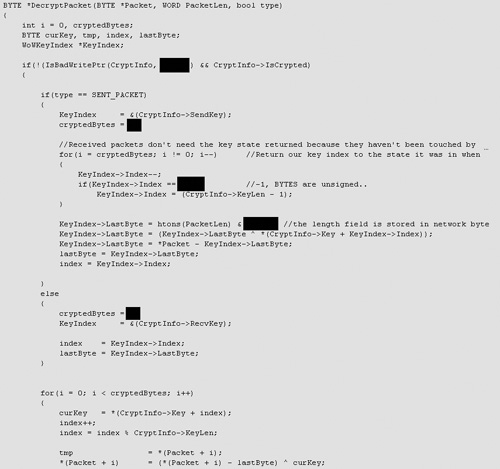

{% include JB/setup %}
{% raw %}
<div>
<a name="toppage" class="pcalibre calibre1"></a><table width="100%" border="0" cellspacing="0" cellpadding="0" class="sfbody"><tr valign="top" class="calibre2"><td class="calibre3"><a name="MainContent" class="pcalibre calibre1"></a><table width="95%" class="sfbody"><tr class="calibre2"><td class="pcalibre1 v"><!--Copyright (c) 2002 Safari Tech Books Online--><table width="100%" border="0" cellspacing="0" cellpadding="2" class="calibre4"><tr class="calibre2"><td valign="middle" class="v1 pcalibre1" height="5"></td></tr><tr class="calibre2"><td valign="middle" class="v1 pcalibre1"><table cellpadding="0" cellspacing="0" border="0" width="100%" class="calibre4"><tr class="calibre2"><td class="calibre6"><span class="calibre7"> </span>
                   
                  <span class="calibre7">   </span>
             <span class="calibre7"> </span></td></tr></table></td><td class="calibre8"/><td valign="middle" class="v2 pcalibre1"> 
           
          <span class="calibre7"><a target="_self" href="ch06lev1sec7.html" title="Previous section" class="pcalibre calibre1"></a></span>
				
				 
				
				<span class="calibre7"><a target="_self" href="ch06lev1sec9.html" title="Next section" class="pcalibre calibre1"></a></span></td></tr></table><div id="section" class="calibre15"><table width="100%" border="0" cellspacing="0" cellpadding="0" class="calibre4"><tr class="calibre2"><td valign="top" class="calibre8">Security Game Programming Networking Programming Greg Hoglund Gary McGraw Addison Wesley Professional Exploiting Online Games: Cheating Massively Distributed Systems<a name="ch06lev1sec8" class="pcalibre calibre1"></a>
<h3 id="title-IDANJFBD" class="docSection1Title">Standing Way Outside the Game: Manipulating Network Packets</h3>
<p class="docText">So far we've discussed ideas that get either above, under, or inside the game client. Another perfectly valid strategy is to focus on the network itself. Obviously, any client-side state must eventually be squirted back over the network if it is going to get to the game server and make any long-term difference. This fact has prompted many game hackers to focus entirely on the network.</p>
<p class="docText">There is one major advantage to focusing on the network—network packets are a single point of data interception where all kinds of great data go by. There is no messy process space chock full of data that move around, messing with debuggers by setting breakpoints, disassembling binary into assembly language arcana, and so on.</p>
<a name="ch06lev2sec24" class="pcalibre calibre1"></a>
<h4 id="title-IDA0JFBD" class="docSection2Title">Encryption on the Wire</h4>
<p class="docText">Game manufacturers are not idiots, of course. Many of them understand the risk of network-based interception techniques and have begun to combat them with cryptography. That is, they encrypt all traffic to and from the server so that it's all scrambled up when it goes by.</p>
<p class="docText">The upshot of this is that intercepting packets, either simply just sniffing them or altering them, requires cracking any encryption scheme being used. There's a problem in crypto land, though—because of the way the communication works, the endpoints need to know about what kind of cryptography is being used as well as secrets like crypto keys. In other words, the game client itself must know how to decrypt said traffic! So reverse engineering the game client should reveal the correct algorithms that an attacker can reproduce in a crypto-savvy sniffer.</p>
<p class="docText"><a class="pcalibre6 pcalibre5 calibre1" href="#ch06fig13">Figure 6-13</a> shows an example of a decryption routine used for WoW packets.</p>
<p class="docText"></p><a name="ch06fig13" class="pcalibre calibre1"></a><p class="calibre28"><center class="calibre29">
<h5 class="docFigureTitle">Figure 6-13. This code is cut from a network sniffer hack that uses the packet decryption routine as revealed by the game client. This decryption routine was intended to reveal the contents of WoW packets.</h5>
</center></p><p class="docText"><div class="v8 pcalibre3 pcalibre2"><a target="_blank" href="fig06-13_alt.jpg" class="pcalibre calibre20">[View full size image]</a></div></p>
<br class="calibre15"/>
<ul class="calibre18"></ul></td></tr></table><table width="100%" border="0" cellspacing="0" cellpadding="2" class="calibre4"><tr class="calibre2"><td valign="middle" class="v1 pcalibre1" height="5"></td></tr><tr class="calibre2"><td valign="middle" class="v1 pcalibre1"><table cellpadding="0" cellspacing="0" border="0" width="100%" class="calibre4"><tr class="calibre2"><td class="calibre6"><span class="calibre7"> </span>
                   
                  <span class="calibre7">   </span>
             <span class="calibre7"> </span></td></tr></table></td><td class="calibre8"/><td valign="middle" class="v2 pcalibre1"> 
           
          <span class="calibre7"><a target="_self" href="ch06lev1sec7.html" title="Previous section" class="pcalibre calibre1"></a></span>
				
				 
				
				<span class="calibre7"><a target="_self" href="ch06lev1sec9.html" title="Next section" class="pcalibre calibre1"></a></span></td></tr></table><table width="100%" border="0" cellspacing="0" cellpadding="2" class="calibre4"><tr class="calibre2"><td valign="top" class="calibre14"><span class="calibre7"></span></td></tr></table></div><!--IP User 2--></td></tr></table></td><td class="calibre3">
                         
                      </td></tr><tr class="calibre2"><td colspan="3" valign="bottom" class="calibre3"><br class="calibre15"/><p class="v5 pcalibre1"></p><br class="calibre15"/></td></tr></table></div>

{% endraw %}

